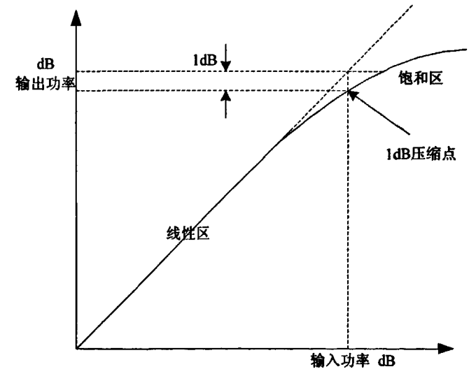
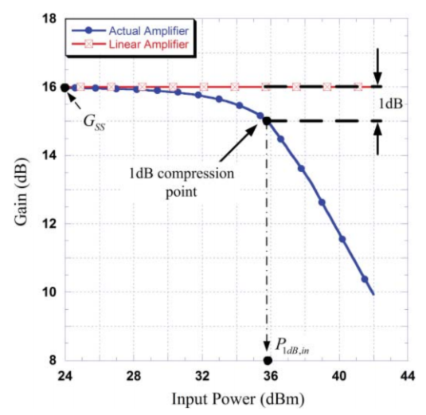
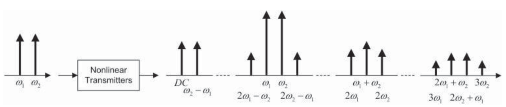

本文所有内容都不考虑记忆效应
1. 什么是非线性
PA的非线性是指，不同功率的输入信号，PA对其放大的效果不同。通常画AM/AM图来描述这一特性。
假设不考虑PA的记忆效应，在特定设备的频率的情况下，输入的功率与输出的功率呈非线性关系，如图

注意：横坐标与纵坐标都是功率（单位db）。
有时也会使用归一化的AM/AM图：

并非PA的整个工作区间都是非线性的，它为分线性区与饱和区。
问：功率和幅度是什么关系？
答：I的幅度的平均 + Q的幅度的平均 = 功率
2. 非线性有什么问题
PA的非线性会导致：
- 带外频谱扩张 --- 邻道干扰 ACI
- 带内传输信号失真 --- 误码率BER 性能下降
以下是数学的角度来解释，为什么PA的非线性会导致这样的问题。对数学不感兴趣的同学可以跳过直接看结论。
这里仍然不考虑记忆效应。
2.1. 数学解释
2.1.1. 定义
这个场景只在理论中存在，先讲这个是为了便于理解后面的内容
假设P(A)中无记忆的。定义：
其中：
是t时刻是输入幅度，是t时刻的输出幅度。
f是某种非线性函数，定义为：
根据泰勒公式展开的原理，任何非线性的函数都能写上以上这种形式。
再假设输入信号为某种双频信号：
把（2）和（3）代入（1）得到一个非常复杂的结果
2.1.2. 互调失真 IMD
这个双频信号由两个步骤和幅度都不同的单频信号组成，得到的输出为：
| 分量 | 成分 | 作用 |
|---|---|---|
| 直流项 | 无干扰 | |
| 基波项 | 线性增益 | |
| 主信道失真 | ||
| 谐波项 | 无干扰 | |
| 互调项 | + | 带内邻信道干扰 |
| 无干扰 |
互调项中，带外部分直接使用滤波器过滤掉，不会成为问题。
带内部分可能会成为问题。
公式里使用了两个离散的频率值来做计算，实际上频率值是连续的。
也就是说，真实场景的输入信号中，会有很多w混在一起，且这些w彼此非常接近。
基于这样的w的前提，类似于w1+w2, w1-w2这样的频率肯定是带外的。类似于2w1-w2, 2w2-w1这样的频率是带内的，是会产生干扰的。

2.2. 结论
多频信号经过非线性系统后，会生成新的频率分量。这些频率分量在原始信号中不存在，是因为经过非线性系统而产生的。
产生的新频率分量，这些频率上的信号是我们不想要的。
如果新频率的位置与原始频率的位置接近，就会对我们想要的那部分信号造成干扰。
如果新的频率分量在IBW以外，就是带外频谱扩张，即邻道干扰（ACI），如果在IBW以内，就是带内传输信号失真，会导致误码率（BER）上升，性能下降。
3. 其它失真
3.1. AM-PM失真
输入信号幅度变化时输出信息相位失真。 图中同心圆上的点幅度相同，相位不同。斜线上的点，相位相同，幅度不同。
图中同心圆上的点幅度相同，相位不同。斜线上的点，相位相同，幅度不同。
假设期望out的点为图点，实际out的点为灰点。图a称为相位失真，图b称为幅度失真。图c称为幅度和相位同时失真。
3.2. PM-AM、PM-PM
PA不会引入这两种失真。
这两种失真是因为：
- gain and phase imbalances in the frequency up-conversion(上变频) stage
- 发射器has a non-flat frequency response over a bandwidth equal to that of the input signal
解决方法：
发射器的careful design
本文不考虑这种失真。
4. 怎样解决非线性
4.1. 输出功率回退
前面介绍过，PA的工作区间分为线性区和饱和区。
可以限制PA始终工作在线性性。
实验数据表明：
在线性区间线性程度好，但工作效率低。
在饱和区间线性程度低，但工作效率高。
回退输入信号的功率会导致功耗非常高，因此这一方法是万不得已的选择。
4.2. DPD
在PA之前增加一个预失真模型即DPD，让DPD和PA共同组成一个线性系统。这是工业界常用的方法。
DPD + PA = 线性PA
使用DPD方法，在得到线性效果的同时保证比较好的工作效率。